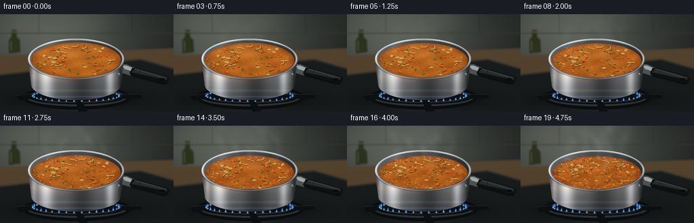
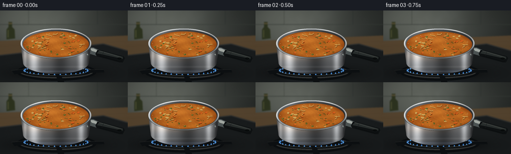

CODING AGENTS AS PIXEL WORLD MODELS
traex/GPT-6.1-Sol · phygen_108
点击播放 · 原生 RGB 像素
逐轮保存的候选
回放视频、检查图与代码变化。
每份候选均可单独播放。实际图片检查记录在下方工具轨迹中。
候选 01播放与检查图
点击播放 · 原生 RGB 像素


展开代码变化
--- 上一保存版本
+++ 本次保存版本
@@ -0,0 +1,363 @@
+"""Procedural RGB timelapse: a stainless saucepan brought to a rolling boil.
+Only numpy and Pillow are used. Run this file to recreate all submitted frames.
+"""
+from pathlib import Path
+import math
+import numpy as np
+from PIL import Image, ImageDraw, ImageFilter
+import artifact_io
+
+ROOT = Path(__file__).resolve().parent
+W, H, SCALE = 256, 144, 3
+WW, HH = W*SCALE, H*SCALE
+Y, X = np.mgrid[0:HH, 0:WW].astype(np.float32)/SCALE
+rng = np.random.default_rng(108)
+CX, CY, RX, RY = 112., 66., 71., 30.
+
+def ellipse(d, box, fill, outline=None, width=1):
+ d.ellipse(tuple(int(v*SCALE) for v in box), fill=fill, outline=outline, width=max(1,int(width*SCALE)))
+
+def polygon(d, pts, fill):
+ d.polygon([(round(x*SCALE),round(y*SCALE)) for x,y in pts],fill=fill)
+
+def line(d, pts, fill, width=1):
+ d.line([(round(x*SCALE),round(y*SCALE)) for x,y in pts],fill=fill,width=max(1,round(width*SCALE)),joint='curve')
+
+def blend(dst, color, alpha):
+ return dst*(1-alpha[...,None]) + np.asarray(color,np.float32)*alpha[...,None]
+
+# Static kitchen: soft focus backsplash, walnut counter and a dark enamel hob.
+base = np.zeros((HH,WW,3),np.float32)
+backlight = np.exp(-((X-65)/128)**2 - ((Y-25)/80)**2)
+for j,(dark,light) in enumerate([(35,60),(38,61),(36,56)]):
+ base[...,j] = dark + light*backlight
+base += (1.0*np.sin(X*.051+Y*.09))[...,None]
+bg = Image.fromarray(np.uint8(np.clip(base,0,255)))
+d = ImageDraw.Draw(bg)
+# Quiet tiled background, without a distracting pattern.
+line(d,[(0,28),(256,28)],(54,59,54),.9)
+line(d,[(57,0),(57,28)],(56,61,55),.7)
+line(d,[(195,0),(195,28)],(39,45,43),.7)
+polygon(d,[(0,61),(256,50),(256,144),(0,144)],(85,68,47))
+for i in range(8):
+ line(d,[(0,72+i*10),(256,62+i*10)],(79+i%2*4,61+i%2*4,43),.5)
+# An out-of-focus bottle and rear countertop are kept at the frame edge.
+polygon(d,[(13,58),(13,38),(17,33),(17,23),(24,23),(24,33),(29,38),(30,56)],(45,51,31))
+line(d,[(17,26),(24,26)],(82,75,49),3)
+line(d,[(16,39),(16,54)],(91,91,59),1.5)
+polygon(d,[(0,89),(207,66),(256,80),(256,144),(0,144)],(26,29,30))
+line(d,[(0,90),(207,67),(256,81)],(76,78,76),1)
+bg = bg.filter(ImageFilter.GaussianBlur(1.1*SCALE))
+base = np.asarray(bg).astype(np.float32)
+# Soft contact shadow of the vessel, and reflections on the enamel.
+shadow = .69*np.exp(-((X-114)/81)**2 - ((Y-126)/15)**2)
+base *= (1-shadow[...,None])
+reflection = np.exp(-((X-113)/58)**2-((Y-139)/9)**2)
+base += reflection[...,None]*np.array([10,12,14])
+# Stove burner rings and cast iron supports.
+bg = Image.fromarray(np.uint8(np.clip(base,0,255)))
+d = ImageDraw.Draw(bg)
+ellipse(d,(33,105,193,141),(11,14,16))
+ellipse(d,(39,110,187,136),(48,50,49))
+ellipse(d,(43,113,183,133),(10,13,15))
+ellipse(d,(51,115,175,131),(42,45,43))
+ellipse(d,(54,115.5,172,129.5),(13,15,16))
+for pts in [[(23,120),(64,116),(72,121),(29,128)],[(162,119),(207,118),(209,124),(161,126)],[(111,126),(119,125),(129,144),(116,144)]]:
+ polygon(d,pts,(13,16,18))
+ line(d,pts[:2],(57,59,56),.8)
+base = np.asarray(bg).astype(np.float32)
+
+# Ingredients persist from frame to frame, following smooth convection paths.
+ingredients=[]
+for i in range(68):
+ rr=np.sqrt(rng.uniform(.03,.85)); angle=rng.uniform(0,2*np.pi)
+ typ=('carrot' if i<18 else 'potato' if i<29 else 'pea' if i<39 else 'herb')
+ ingredients.append((rr,angle,typ,rng.uniform(.6,1.3),rng.uniform(0,6.28),rng.uniform(-1,1)))
+noodles=[]
+for i in range(9):
+ rr=np.sqrt(rng.uniform(.06,.68)); a=rng.uniform(0,6.28)
+ noodles.append((rr,a,rng.uniform(7,13),rng.uniform(0,6.28)))
+bubbles=[]
+for i in range(115):
+ rr=np.sqrt(rng.uniform(.008,.93)); a=rng.uniform(0,6.28)
+ bubbles.append((rr,a,rng.uniform(.9,4.0),rng.uniform(0,1),rng.uniform(.65,1.25)))
+foam=[]
+for i in range(160):
+ a=rng.uniform(0,6.28); rr=rng.uniform(.8,.985) if i<95 else np.sqrt(rng.uniform(.03,.85))
+ foam.append((rr,a,rng.uniform(.28,.85),rng.uniform(0,6.28)))
+
+
+def pot_body(canvas):
+ # Projected cylindrical stainless steel wall, with curved bottom.
+ ycenter=104.
+ yy=Y-ycenter
+ rad=np.where(Y<=ycenter, RX-4.8*np.clip((Y-CY)/(ycenter-CY),0,1), 66.2*np.sqrt(np.clip(1-(yy/23.0)**2,0,1)))
+ mask=(Y>=CY)&(Y<=127)&(np.abs(X-CX)<=rad)
+ u=np.clip((X-CX)/70,-1,1)
+ # Wide tonal bands are kitchen/window reflections, not a flat gray fill.
+ steel=52+51*np.sqrt(np.maximum(0,1-u*u))
+ steel+=116*np.exp(-((u+.64)/.16)**2)
+ steel+=66*np.exp(-((u+.89)/.058)**2)
+ steel-=51*np.exp(-((u-.12)/.28)**2)
+ steel+=84*np.exp(-((u-.72)/.09)**2)
+ steel-=35*np.exp(-((u-.94)/.05)**2)
+ vertical=1-.36*np.clip((Y-91)/37,0,1)
+ steel*=vertical
+ steel+=13*np.exp(-((Y-113)/2.1)**2)+19*np.exp(-((Y-122)/1)**2)
+ brushing=(np.sin(Y*18.4+np.sin(X*.09))*.65+np.sin(Y*7.2+X*.03)*.9)
+ colors=np.stack([steel*1.035+9,steel*1.044+10,steel*1.055+11],axis=-1)
+ colors+=brushing[...,None]
+ # Coppery reflection from the broth across the upper lip; blue burner below.
+ amber=np.exp(-((Y-91)/9)**2)*np.exp(-((u+.35)/.65)**2)
+ colors+=amber[...,None]*np.array([20,7,-5])
+ blue=np.exp(-((Y-122)/3)**2)*(.3+.7*np.abs(u))
+ colors+=blue[...,None]*np.array([-3,6,20])
+ canvas[mask]=np.clip(colors[mask],0,255)
+ return canvas
+
+
+def draw_handle(canvas):
+ im=Image.fromarray(np.uint8(np.clip(canvas,0,255)))
+ d=ImageDraw.Draw(im)
+ # Short steel tang, a long heat-resistant black handle at the right.
+ polygon(d,[(174,74),(187,74),(209,84),(206,95),(184,88),(175,86)],(76,83,83))
+ polygon(d,[(180,76),(187,76),(208,85),(207,88),(184,81)],(163,169,163))
+ polygon(d,[(195,79),(205,80),(248,92),(250,96),(246,104),(239,104),(194,92),(191,87)],(15,18,19))
+ polygon(d,[(199,80),(208,82),(246,93),(246,97),(200,87),(194,86)],(40,45,44))
+ line(d,[(199,81),(243,94)],(75,78,74),.85)
+ line(d,[(199,91),(239,102),(245,101)],(8,10,11),1)
+ # Grip seam and small hanging aperture near the end.
+ line(d,[(207,83),(204,92)],(22,25,26),.8)
+ ellipse(d,(235,94,243,98),(8,11,11))
+ line(d,[(236,94),(241,95)],(54,56,52),.5)
+ return np.asarray(im).astype(np.float32)
+
+
+def add_bubble(canvas, px, py, r, life, vigor, clip):
+ # Thin, translucent dome with refracted amber base, Fresnel edge and reflected window.
+ sy=.50
+ py-=.18*r
+ x0=max(0,int((px-r-1)*SCALE)); x1=min(WW,int((px+r+1)*SCALE)+1)
+ y0=max(0,int((py-r*sy-1)*SCALE)); y1=min(HH,int((py+r*sy+1)*SCALE)+1)
+ if x1<=x0 or y1<=y0:return
+ xx=X[y0:y1,x0:x1]; yy=Y[y0:y1,x0:x1]
+ dx=(xx-px)/r; dy=(yy-py)/(r*sy)
+ rho=np.sqrt(dx*dx+dy*dy)
+ a=np.clip((1-rho)*SCALE*r*sy,0,1)*clip[y0:y1,x0:x1]
+ old=canvas[y0:y1,x0:x1]
+ if life<.75:
+ nz=np.sqrt(np.maximum(0,1-rho*rho))
+ edge=np.exp(-((rho-.89)/.11)**2)
+ highlight=np.exp(-((dx+.38)/.26)**2-((dy+.40)/.22)**2)
+ rimlight=np.exp(-((rho-.88)/.07)**2)*np.clip(-dx*.6-dy*.7+.25,0,1)
+ low=np.exp(-((dy-.68)/.18)**2)*np.exp(-(dx/.7)**4)
+ tint=old*.62+np.array([65.,31.,6.])
+ tint+=nz[...,None]*np.array([11.,8.,1.])
+ tint-=edge[...,None]*np.array([34,26,15])
+ tint+=highlight[...,None]*np.array([125,117,91])
+ tint+=rimlight[...,None]*np.array([72,63,32])
+ tint+=low[...,None]*np.array([44,24,6])
+ else:
+ # Broken bubbles become expanding, thinning rings rather than fixed white beads.
+ ring=np.exp(-((rho-.83)/.10)**2)
+ fade=(1-life)/.25
+ a*=np.clip(fade,0,1)
+ tint=old*(.82+rho[...,None]*.14)
+ tint+=ring[...,None]*np.array([50,43,22])
+ tint-=np.exp(-(rho/.6)**2)[...,None]*np.array([30,21,12])
+ canvas[y0:y1,x0:x1]=old*(1-a[...,None])+np.clip(tint,0,255)*a[...,None]
+
+
+def render(index):
+ t=index/19.
+ vigor=t**1.15
+ seconds=index/4.
+ canvas=base.copy()
+ # Gas jets: flame pattern is coherent but changes shape with heat.
+ im=Image.fromarray(np.uint8(canvas)); d=ImageDraw.Draw(im)
+ for j in range(35):
+ a=2*np.pi*j/35
+ px=112+64*np.cos(a); py=121+8*np.sin(a)
+ flick=.8+.2*np.sin(index*1.2+j*2.4)
+ ht=(3.7+2.5*vigor)*flick
+ polygon(d,[(px-2,py),(px-.7,py-ht*.5),(px+.1,py-ht),(px+1.0,py-ht*.4),(px+2,py)],(25,85,177))
+ polygon(d,[(px-.9,py),(px,py-ht*.70),(px+.9,py)],(90,167,221))
+ line(d,[(px-.5,py),(px+.5,py)],(174,210,236),.55)
+ canvas=np.asarray(im).astype(np.float32)
+ canvas=draw_handle(canvas)
+ canvas=pot_body(canvas)
+ # The opening and its recessed inner wall.
+ re=np.sqrt(((X-CX)/RX)**2+((Y-CY)/RY)**2)
+ opening=re<1
+ metallic=np.zeros_like(canvas)
+ u=(X-CX)/RX; v=(Y-CY)/RY
+ walllum=65+27*(-u)+40*np.clip(v,0,1)
+ walllum+=18*np.exp(-((u+.55)/.18)**2)
+ metallic[...,0]=walllum*.97+5
+ metallic[...,1]=walllum+5
+ metallic[...,2]=walllum*1.025+5
+ canvas[opening]=metallic[opening]
+ # Level falls modestly as the rolling boil drives off moisture.
+ soup_y=67.6+2.7*t
+ soup_rx=66.1-.5*t; soup_ry=26.0-.3*t
+ U=(X-CX)/soup_rx; V=(Y-soup_y)/soup_ry
+ soup_mask=(U*U+V*V)<1
+ wavephase=seconds*(.75+1.2*vigor)
+ # Gentle currents transition to irregular churning. Continuous functions avoid texture flicker.
+ qx=U+.020*np.sin(V*8+wavephase*1.4)*(1+2*vigor)
+ qy=V+.035*np.cos(U*9-wavephase)*(1+vigor)
+ coarse=np.sin(8*qx+3*qy-wavephase*.7)*np.sin(7*qy-2*qx+wavephase*.65)
+ fine=np.sin(41*qx+17*qy+wavephase*1.9)*np.cos(35*qy-11*qx-wavephase*1.1)
+ fine2=np.cos(80*qx+29*qy-wavephase*2)*np.sin(73*qy-19*qx+wavephase)
+ colors=np.zeros_like(canvas)
+ colors[...,0]=181-11*t+coarse*12+fine*3+fine2*1.3
+ colors[...,1]=100-12*t+coarse*10+fine*3+fine2*1.3
+ colors[...,2]=31-4*t+coarse*4+fine*1.4
+ # Smooth glints on liquid waves and faint reflected window.
+ ripple=np.sin(13*U+wavephase*2)+np.sin(17*V-wavephase*1.7)+.4*np.sin(39*U+21*V-wavephase*2.6)
+ slope=(np.cos(13*U+wavephase*2)*.4+np.cos(17*V-wavephase*1.7)*.3)*(0.3+vigor)
+ glint=np.maximum(0,slope-.26)**5*200
+ sheen=np.exp(-((U+.35)/.50)**2-((V+.38)/.38)**2)*17
+ colors+=glint[...,None]*np.array([1,.86,.57])+sheen[...,None]*np.array([1,.87,.65])
+ edge=np.clip((U*U+V*V-.72)/.28,0,1)
+ colors-=edge[...,None]*np.array([24,21,9])
+ canvas[soup_mask]=np.clip(colors[soup_mask],0,255)
+ im=Image.fromarray(np.uint8(np.clip(canvas,0,255)))
+ # Ingredients are drawn in a separate layer, then masked to the liquid opening.
+ food=Image.new('RGBA',(WW,HH),(0,0,0,0)); d=ImageDraw.Draw(food)
+ for rr,a,length,rot in noodles:
+ aa=a+.10*seconds*(.25+vigor)
+ px=CX+soup_rx*rr*np.cos(aa); py=soup_y+soup_ry*rr*np.sin(aa)
+ pts=[]
+ for k in range(15):
+ s=(k/14-.5)*length
+ xx=s; yy=math.sin(k/14*5+rot+seconds*.15)*1.6
+ pts.append((px+xx*np.cos(rot)-yy*np.sin(rot),py+.55*(xx*np.sin(rot)+yy*np.cos(rot))))
+ line(d,[(x+.4,y+.6) for x,y in pts],(96,53,15,190),2)
+ line(d,pts,(217,175,90,220),1.45)
+ line(d,[(x,y-.3) for x,y in pts],(235,197,116,175),.5)
+ for rr,a,typ,size,rot,speed in ingredients:
+ aa=a+seconds*(.02+.09*vigor)*(1+.3*speed)
+ rad=rr+.015*vigor*np.sin(seconds*1.9+rot)
+ px=CX+soup_rx*rad*np.cos(aa)+vigor*.9*np.sin(seconds*3+rot)
+ py=soup_y+soup_ry*rad*np.sin(aa)+vigor*.55*np.sin(seconds*2+rot)
+ rot+=seconds*.15*speed*(.2+vigor)
+ if typ=='carrot':
+ vertices=[(-2.6,-1.8),(1.8,-1.9),(2.9,.9),(.5,2),(-2.3,1.3)]
+ pts=[(px+size*(x*np.cos(rot)-y*np.sin(rot)),py+size*.67*(x*np.sin(rot)+y*np.cos(rot))) for x,y in vertices]
+ polygon(d,[(x+.4,y+.8) for x,y in pts],(96,43,12,235))
+ polygon(d,pts,(204,89,28,245))
+ line(d,pts[:3],(230,122,39,235),.6)
+ line(d,pts[3:],(155,62,16,220),.55)
+ elif typ=='potato':
+ verts=[(-3,-1),(-1.9,-2.2),(1.6,-2),(3.4,-.3),(2,2),(-1.2,1.7)]
+ pts=[(px+size*(x*np.cos(rot)-y*np.sin(rot)),py+.64*size*(x*np.sin(rot)+y*np.cos(rot))) for x,y in verts]
+ polygon(d,[(x,y+.7) for x,y in pts],(118,77,29,210))
+ polygon(d,pts,(207,170,91,233))
+ line(d,pts[:3],(231,198,124,230),.75)
+ elif typ=='pea':
+ r=size*1.8
+ ellipse(d,(px-r,py-r*.6,px+r,py+r*.6),(72,90,34,238))
+ ellipse(d,(px-r*.65,py-r*.5,px+r*.1,py+r*.05),(127,139,57,190))
+ ellipse(d,(px-r*.35,py-r*.32,px-r*.1,py-r*.1),(179,173,81,160))
+ else:
+ pts=[(px-size*1.6,py),(px+size*.4,py-size*.6),(px+size*1.8,py+.5*size),(px,py+.85*size)]
+ polygon(d,pts,(49,67,25,220))
+ line(d,[(px-.4,py+.3),(px+1.1*size,py+.25)],(104,115,44,220),.4)
+ fa=np.asarray(food).copy()
+ fa[...,3]=np.uint8(fa[...,3]*soup_mask)
+ im=Image.alpha_composite(im.convert('RGBA'),Image.fromarray(fa))
+ canvas=np.asarray(im.convert('RGB')).astype(np.float32)
+ # Tiny glistening oil droplets, unchanged in identity but advected.
+ im=Image.fromarray(np.uint8(canvas)); d=ImageDraw.Draw(im)
+ for k in range(35):
+ a=k*2.399+seconds*.025; rr=.87*np.sqrt((k+.5)/35)
+ px=CX+soup_rx*rr*np.cos(a); py=soup_y+soup_ry*rr*np.sin(a)
+ r=.25+.3*(.5+.5*np.sin(k*5))
+ ellipse(d,(px-r,py-r*.45,px+r,py+r*.45),(222,146,52))
+ canvas=np.asarray(im).astype(np.float32)
+ active=7+int(98*vigor)
+ # A staggered lifecycle creates growth, rupture and renewal throughout the boiling surface.
+ for rr,a,r,phase,rate in bubbles[:active]:
+ aa=a+.045*seconds*(.3+vigor)
+ px=CX+soup_rx*rr*np.cos(aa); py=soup_y+soup_ry*rr*np.sin(aa)
+ life=(phase+seconds*(.5+vigor*1.3)*rate)%1
+ radius=r*(.55+.65*vigor)*(.28+.72*np.sqrt(life))
+ add_bubble(canvas,px,py,radius,life,vigor,soup_mask)
+ # Persistent islands of fine beige froth collect close to the inner wall.
+ im=Image.fromarray(np.uint8(np.clip(canvas,0,255))); d=ImageDraw.Draw(im)
+ for rr,a,r,phase in foam[:int(12+125*vigor)]:
+ aa=a+seconds*.027
+ px=CX+soup_rx*rr*np.cos(aa); py=soup_y+soup_ry*rr*np.sin(aa)
+ r*=.8+.3*np.sin(phase+seconds*.8)**2
+ ellipse(d,(px-r,py-r*.52,px+r,py+r*.52),(207,170,104))
+ ellipse(d,(px-r*.6,py-r*.35,px+r*.48,py+r*.31),(146,94,39))
+ line(d,[(px-r*.55,py-r*.28),(px,py-r*.38)],(235,203,140),.32)
+ canvas=np.asarray(im).astype(np.float32)
+ # The polished rolled lip is composited after liquid so it remains clean and solid.
+ outer=((X-CX)/RX)**2+((Y-CY)/RY)**2
+ inner=((X-CX)/67.6)**2+((Y-CY)/27.65)**2
+ rim=(outer<=1)&(inner>=1)
+ theta=np.arctan2((Y-CY)/RY,(X-CX)/RX)
+ radial=np.sqrt(np.maximum(outer,0))
+ brightness=139+47*np.cos(theta+2.05)
+ brightness+=54*np.exp(-((radial-.978)/.012)**2)
+ brightness-=35*np.exp(-((radial-.952)/.012)**2)
+ brightness+=18*np.cos(theta*6)
+ rimcol=np.stack([brightness*.99+7,brightness+9,brightness*1.01+9],axis=-1)
+ canvas[rim]=np.clip(rimcol[rim],0,255)
+ # A thin dark boundary below the front rolled rim accentuates the metal thickness.
+ im=Image.fromarray(np.uint8(np.clip(canvas,0,255))); d=ImageDraw.Draw(im)
+ pts=[]
+ for a in np.linspace(.10,np.pi-.10,110):
+ pts.append((CX+71*np.cos(a),CY+30*np.sin(a)+1.1))
+ line(d,pts,(62,68,67),.65)
+ # A couple of realistic rivet reflections, not ornamental bolts.
+ ellipse(d,(174,87,177,91),(84,91,91))
+ ellipse(d,(174.3,87.2,176.3,88.8),(168,171,163))
+ canvas=np.asarray(im).astype(np.float32)
+ # A sparse spray at full boil: tiny broth droplets rise and fall just over the liquid.
+ if vigor>.45:
+ im=Image.fromarray(np.uint8(canvas)); d=ImageDraw.Draw(im)
+ for j in range(5):
+ p=(seconds*(.75+j*.12)+j*.192)%1
+ if p>.72: continue
+ px=CX+(-42+j*22)+2*np.sin(seconds+j)
+ py=soup_y-8-(4+5*vigor)*np.sin(p/.72*np.pi)+j%2*5
+ r=.3+.35*vigor
+ ellipse(d,(px-r,py-r*1.25,px+r,py+r*1.25),(213,153,70))
+ ellipse(d,(px-r*.6,py-r,px,py),(248,209,132))
+ canvas=np.asarray(im).astype(np.float32)
+ # Semi-transparent steam: rising wisps with broad diffusion and internal turbulence.
+ density=np.zeros((HH,WW),np.float32)
+ sources=[(70,59,0.2),(91,55,1.6),(113,53,3.1),(133,55,4.4),(153,60,5.5),(122,72,2.4)]
+ for j,(sx,sy,phase) in enumerate(sources):
+ height=sy-Y
+ rise=np.clip(height,0,None)
+ center=sx+np.sin(rise*.105-seconds*1.9+phase)*(2.2+rise*.055)+rise*.055*np.sin(phase)
+ width=2.5+rise*.11+(1.4+rise*.04)*(.5+.5*np.sin(rise*.095-seconds*1.3+phase))
+ narrow=np.exp(-((X-center)/width)**2)
+ broad=np.exp(-((X-center-3*np.sin(phase))/ (width*1.9))**2)
+ envelope=(1-np.exp(-rise/6))*np.exp(-rise/67)*(height>0)
+ envelope*=.55+.45*np.sin(rise*.115-seconds*2.5+phase)**2
+ density+=envelope*(narrow*.64+broad*.21)
+ turbulence=.8+.13*np.sin(X*.21+Y*.13+seconds*1.1)+.07*np.sin(X*.39-Y*.28-seconds*2.1)
+ density*=turbulence
+ alpha=1-np.exp(-density*(.027+.185*vigor))
+ steamcol=np.stack([205+6*backlight,215+7*backlight,218+8*backlight],axis=-1)
+ canvas=blend(canvas,steamcol,alpha)
+ # Fine, fixed camera grain and mild lens falloff unify the composite.
+ vignette=1-.075*((X-125)/163)**2-.06*((Y-75)/116)**2
+ grain=np.random.default_rng(789).normal(0,.58,(HH,WW)).astype(np.float32)
+ canvas=canvas*vignette[...,None]+grain[...,None]
+ out=Image.fromarray(np.uint8(np.clip(canvas,0,255))).resize((W,H),Image.Resampling.LANCZOS)
+ return np.asarray(out)
+
+
+def main():
+ frames=np.stack([render(i) for i in range(20)]).astype(np.uint8)
+ artifact_io.save(frames,ROOT)
+ print(f'Saved {len(frames)} RGB frames: {frames.shape}, dtype={frames.dtype}')
+
+if __name__=='__main__':
+ main()
可观测工具轨迹
实际执行的命令与返回图片。
命令 1exit 0
/bin/bash -lc 'ls -la; cat prompt.txt; cat GENERATION_RULES.md; cat task_spec.json'
命令 2exit 0
/bin/bash -lc "cat artifact_io.py; python - <<'PY' import numpy,PIL print(numpy.__version__,PIL.__version__) PY"
命令 3exit 0
/bin/bash -lc 'which ffmpeg || true'
命令 4exit 0
/bin/bash -lc "cat > generate.py <<'PY'
\"\"\"Procedural RGB timelapse: a stainless saucepan brought to a rolling boil.
Only numpy and Pillow are used. Run this file to recreate all submitted frames.
\"\"\"
from pathlib import Path
import math
import numpy as np
from PIL import Image, ImageDraw, ImageFilter
import artifact_io
ROOT = Path(__file__).resolve().parent
W, H, SCALE = 256, 144, 3
WW, HH = W*SCALE, H*SCALE
Y, X = np.mgrid[0:HH, 0:WW].astype(np.float32)/SCALE
rng = np.random.default_rng(108)
CX, CY, RX, RY = 112., 66., 71., 30.
def ellipse(d, box, fill, outline=None, width=1):
d.ellipse(tuple(int(v*SCALE) for v in box), fill=fill, outline=outline, width=max(1,int(width*SCALE)))
def polygon(d, pts, fill):
d.polygon([(round(x*SCALE),round(y*SCALE)) for x,y in pts],fill=fill)
def line(d, pts, fill, width=1):
d.line([(round(x*SCALE),round(y*SCALE)) for x,y in pts],fill=fill,width=max(1,round(width*SCALE)),joint='curve')
def blend(dst, color, alpha):
return dst*(1-alpha[...,None]) + np.asarray(color,np.float32)*alpha[...,None]
# Static kitchen: soft focus backsplash, walnut counter and a dark enamel hob.
base = np.zeros((HH,WW,3),np.float32)
backlight = np.exp(-((X-65)/128)**2 - ((Y-25)/80)**2)
for j,(dark,light) in enumerate([(35,60),(38,61),(36,56)]):
base[...,j] = dark + light*backlight
base += (1.0*np.sin(X*.051+Y*.09))[...,None]
bg = Image.fromarray(np.uint8(np.clip(base,0,255)))
d = ImageDraw.Draw(bg)
# Quiet tiled background, without a distracting pattern.
line(d,[(0,28),(256,28)],(54,59,54),.9)
line(d,[(57,0),(57,28)],(56,61,55),.7)
line(d,[(195,0),(195,28)],(39,45,43),.7)
polygon(d,[(0,61),(256,50),(256,144),(0,144)],(85,68,47))
for i in range(8):
line(d,[(0,72+i*10),(256,62+i*10)],(79+i%2*4,61+i%2*4,43),.5)
# An out-of-focus bottle and rear countertop are kept at the frame edge.
polygon(d,[(13,58),(13,38),(17,33),(17,23),(24,23),(24,33),(29,38),(30,56)],(45,51,31))
line(d,[(17,26),(24,26)],(82,75,49),3)
line(d,[(16,39),(16,54)],(91,91,59),1.5)
polygon(d,[(0,89),(207,66),(256,80),(256,144),(0,144)],(26,29,30))
line(d,[(0,90),(207,67),(256,81)],(76,78,76),1)
bg = bg.filter(ImageFilter.GaussianBlur(1.1*SCALE))
base = np.asarray(bg).astype(np.float32)
# Soft contact shadow of the vessel, and reflections on the enamel.
shadow = .69*np.exp(-((X-114)/81)**2 - ((Y-126)/15)**2)
base *= (1-shadow[...,None])
reflection = np.exp(-((X-113)/58)**2-((Y-139)/9)**2)
base += reflection[...,None]*np.array([10,12,14])
# Stove burner rings and cast iron supports.
bg = Image.fromarray(np.uint8(np.clip(base,0,255)))
d = ImageDraw.Draw(bg)
ellipse(d,(33,105,193,141),(11,14,16))
ellipse(d,(39,110,187,136),(48,50,49))
ellipse(d,(43,113,183,133),(10,13,15))
ellipse(d,(51,115,175,131),(42,45,43))
ellipse(d,(54,115.5,172,129.5),(13,15,16))
for pts in [[(23,120),(64,116),(72,121),(29,128)],[(162,119),(207,118),(209,124),(161,126)],[(111,126),(119,125),(129,144),(116,144)]]:
polygon(d,pts,(13,16,18))
line(d,pts[:2],(57,59,56),.8)
base = np.asarray(bg).astype(np.float32)
# Ingredients persist from frame to frame, following smooth convection paths.
ingredients=[]
for i in range(68):
rr=np.sqrt(rng.uniform(.03,.85)); angle=rng.uniform(0,2*np.pi)
typ=('carrot' if i<18 else 'potato' if i<29 else 'pea' if i<39 else 'herb')
ingredients.append((rr,angle,typ,rng.uniform(.6,1.3),rng.uniform(0,6.28),rng.uniform(-1,1)))
noodles=[]
for i in range(9):
rr=np.sqrt(rng.uniform(.06,.68)); a=rng.uniform(0,6.28)
noodles.append((rr,a,rng.uniform(7,13),rng.uniform(0,6.28)))
bubbles=[]
for i in range(115):
rr=np.sqrt(rng.uniform(.008,.93)); a=rng.uniform(0,6.28)
bubbles.append((rr,a,rng.uniform(.9,4.0),rng.uniform(0,1),rng.uniform(.65,1.25)))
foam=[]
for i in range(160):
a=rng.uniform(0,6.28); rr=rng.uniform(.8,.985) if i<95 else np.sqrt(rng.uniform(.03,.85))
foam.append((rr,a,rng.uniform(.28,.85),rng.uniform(0,6.28)))
def pot_body(canvas):
# Projected cylindrical stainless steel wall, with curved bottom.
ycenter=104.
yy=Y-ycenter
rad=np.where(Y<=ycenter, RX-4.8*np.clip((Y-CY)/(ycenter-CY),0,1), 66.2*np.sqrt(np.clip(1-(yy/23.0)**2,0,1)))
mask=(Y>=CY)&(Y<=127)&(np.abs(X-CX)<=rad)
u=np.clip((X-CX)/70,-1,1)
# Wide tonal bands are kitchen/window reflections, not a flat gray fill.
steel=52+51*np.sqrt(np.maximum(0,1-u*u))
steel+=116*np.exp(-((u+.64)/.16)**2)
steel+=66*np.exp(-((u+.89)/.058)**2)
steel-=51*np.exp(-((u-.12)/.28)**2)
steel+=84*np.exp(-((u-.72)/.09)**2)
steel-=35*np.exp(-((u-.94)/.05)**2)
vertical=1-.36*np.clip((Y-91)/37,0,1)
steel*=vertical
steel+=13*np.exp(-((Y-113)/2.1)**2)+19*np.exp(-((Y-122)/1)**2)
brushing=(np.sin(Y*18.4+np.sin(X*.09))*.65+np.sin(Y*7.2+X*.03)*.9)
colors=np.stack([steel*1.035+9,steel*1.044+10,steel*1.055+11],axis=-1)
colors+=brushing[...,None]
# Coppery reflection from the broth across the upper lip; blue burner below.
amber=np.exp(-((Y-91)/9)**2)*np.exp(-((u+.35)/.65)**2)
colors+=amber[...,None]*np.array([20,7,-5])
blue=np.exp(-((Y-122)/3)**2)*(.3+.7*np.abs(u))
colors+=blue[...,None]*np.array([-3,6,20])
canvas[mask]=np.clip(colors[mask],0,255)
return canvas
def draw_handle(canvas):
im=Image.fromarray(np.uint8(np.clip(canvas,0,255)))
d=ImageDraw.Draw(im)
# Short steel tang, a long heat-resistant black handle at the right.
polygon(d,[(174,74),(187,74),(209,84),(206,95),(184,88),(175,86)],(76,83,83))
polygon(d,[(180,76),(187,76),(208,85),(207,88),(184,81)],(163,169,163))
polygon(d,[(195,79),(205,80),(248,92),(250,96),(246,104),(239,104),(194,92),(191,87)],(15,18,19))
polygon(d,[(199,80),(208,82),(246,93),(246,97),(200,87),(194,86)],(40,45,44))
line(d,[(199,81),(243,94)],(75,78,74),.85)
line(d,[(199,91),(239,102),(245,101)],(8,10,11),1)
# Grip seam and small hanging aperture near the end.
line(d,[(207,83),(204,92)],(22,25,26),.8)
ellipse(d,(235,94,243,98),(8,11,11))
line(d,[(236,94),(241,95)],(54,56,52),.5)
return np.asarray(im).astype(np.float32)
def add_bubble(canvas, px, py, r, life, vigor, clip):
# Thin, translucent dome with refracted amber base, Fresnel edge and reflected window.
sy=.50
py-=.18*r
x0=max(0,int((px-r-1)*SCALE)); x1=min(WW,int((px+r+1)*SCALE)+1)
y0=max(0,int((py-r*sy-1)*SCALE)); y1=min(HH,int((py+r*sy+1)*SCALE)+1)
if x1<=x0 or y1<=y0:return
xx=X[y0:y1,x0:x1]; yy=Y[y0:y1,x0:x1]
dx=(xx-px)/r; dy=(yy-py)/(r*sy)
rho=np.sqrt(dx*dx+dy*dy)
a=np.clip((1-rho)*SCALE*r*sy,0,1)*clip[y0:y1,x0:x1]
old=canvas[y0:y1,x0:x1]
if life<.75:
nz=np.sqrt(np.maximum(0,1-rho*rho))
edge=np.exp(-((rho-.89)/.11)**2)
highlight=np.exp(-((dx+.38)/.26)**2-((dy+.40)/.22)**2)
rimlight=np.exp(-((rho-.88)/.07)**2)*np.clip(-dx*.6-dy*.7+.25,0,1)
low=np.exp(-((dy-.68)/.18)**2)*np.exp(-(dx/.7)**4)
tint=old*.62+np.array([65.,31.,6.])
tint+=nz[...,None]*np.array([11.,8.,1.])
tint-=edge[...,None]*np.array([34,26,15])
tint+=highlight[...,None]*np.array([125,117,91])
tint+=rimlight[...,None]*np.array([72,63,32])
tint+=low[...,None]*np.array([44,24,6])
else:
# Broken bubbles become expanding, thinning rings rather than fixed white beads.
ring=np.exp(-((rho-.83)/.10)**2)
fade=(1-life)/.25
a*=np.clip(fade,0,1)
tint=old*(.82+rho[...,None]*.14)
tint+=ring[...,None]*np.array([50,43,22])
tint-=np.exp(-(rho/.6)**2)[...,None]*np.array([30,21,12])
canvas[y0:y1,x0:x1]=old*(1-a[...,None])+np.clip(tint,0,255)*a[...,None]
def render(index):
t=index/19.
vigor=t**1.15
seconds=index/4.
canvas=base.copy()
# Gas jets: flame pattern is coherent but changes shape with heat.
im=Image.fromarray(np.uint8(canvas)); d=ImageDraw.Draw(im)
for j in range(35):
a=2*np.pi*j/35
px=112+64*np.cos(a); py=121+8*np.sin(a)
flick=.8+.2*np.sin(index*1.2+j*2.4)
ht=(3.7+2.5*vigor)*flick
polygon(d,[(px-2,py),(px-.7,py-ht*.5),(px+.1,py-ht),(px+1.0,py-ht*.4),(px+2,py)],(25,85,177))
polygon(d,[(px-.9,py),(px,py-ht*.70),(px+.9,py)],(90,167,221))
line(d,[(px-.5,py),(px+.5,py)],(174,210,236),.55)
canvas=np.asarray(im).astype(np.float32)
canvas=draw_handle(canvas)
canvas=pot_body(canvas)
# The opening and its recessed inner wall.
re=np.sqrt(((X-CX)/RX)**2+((Y-CY)/RY)**2)
opening=re<1
metallic=np.zeros_like(canvas)
u=(X-CX)/RX; v=(Y-CY)/RY
walllum=65+27*(-u)+40*np.clip(v,0,1)
walllum+=18*np.exp(-((u+.55)/.18)**2)
metallic[...,0]=walllum*.97+5
metallic[...,1]=walllum+5
metallic[...,2]=walllum*1.025+5
canvas[opening]=metallic[opening]
# Level falls modestly as the rolling boil drives off moisture.
soup_y=67.6+2.7*t
soup_rx=66.1-.5*t; soup_ry=26.0-.3*t
U=(X-CX)/soup_rx; V=(Y-soup_y)/soup_ry
soup_mask=(U*U+V*V)<1
wavephase=seconds*(.75+1.2*vigor)
# Gentle currents transition to irregular churning. Continuous functions avoid texture flicker.
qx=U+.020*np.sin(V*8+wavephase*1.4)*(1+2*vigor)
qy=V+.035*np.cos(U*9-wavephase)*(1+vigor)
coarse=np.sin(8*qx+3*qy-wavephase*.7)*np.sin(7*qy-2*qx+wavephase*.65)
fine=np.sin(41*qx+17*qy+wavephase*1.9)*np.cos(35*qy-11*qx-wavephase*1.1)
fine2=np.cos(80*qx+29*qy-wavephase*2)*np.sin(73*qy-19*qx+wavephase)
colors=np.zeros_like(canvas)
colors[...,0]=181-11*t+coarse*12+fine*3+fine2*1.3
colors[...,1]=100-12*t+coarse*10+fine*3+fine2*1.3
colors[...,2]=31-4*t+coarse*4+fine*1.4
# Smooth glints on liquid waves and faint reflected window.
ripple=np.sin(13*U+wavephase*2)+np.sin(17*V-wavephase*1.7)+.4*np.sin(39*U+21*V-wavephase*2.6)
slope=(np.cos(13*U+wavephase*2)*.4+np.cos(17*V-wavephase*1.7)*.3)*(0.3+vigor)
glint=np.maximum(0,slope-.26)**5*200
sheen=np.exp(-((U+.35)/.50)**2-((V+.38)/.38)**2)*17
colors+=glint[...,None]*np.array([1,.86,.57])+sheen[...,None]*np.array([1,.87,.65])
edge=np.clip((U*U+V*V-.72)/.28,0,1)
colors-=edge[...,None]*np.array([24,21,9])
canvas[soup_mask]=np.clip(colors[soup_mask],0,255)
im=Image.fromarray(np.uint8(np.clip(canvas,0,255)))
# Ingredients are drawn in a separate layer, then masked to the liquid opening.
food=Image.new('RGBA',(WW,HH),(0,0,0,0)); d=ImageDraw.Draw(food)
for rr,a,length,rot in noodles:
aa=a+.10*seconds*(.25+vigor)
px=CX+soup_rx*rr*np.cos(aa); py=soup_y+soup_ry*rr*np.sin(aa)
pts=[]
for k in range(15):
s=(k/14-.5)*length
xx=s; yy=math.sin(k/14*5+rot+seconds*.15)*1.6
pts.append((px+xx*np.cos(rot)-yy*np.sin(rot),py+.55*(xx*np.sin(rot)+yy*np.cos(rot))))
line(d,[(x+.4,y+.6) for x,y in pts],(96,53,15,190),2)
line(d,pts,(217,175,90,220),1.45)
line(d,[(x,y-.3) for x,y in pts],(235,197,116,175),.5)
for rr,a,typ,size,rot,speed in ingredients:
aa=a+seconds*(.02+.09*vigor)*(1+.3*speed)
rad=rr+.015*vigor*np.sin(seconds*1.9+rot)
px=CX+soup_rx*rad*np.cos(aa)+vigor*.9*np.sin(seconds*3+rot)
py=soup_y+soup_ry*rad*np.sin(aa)+vigor*.55*np.sin(seconds*2+rot)
rot+=seconds*.15*speed*(.2+vigor)
if typ=='carrot':
vertices=[(-2.6,-1.8),(1.8,-1.9),(2.9,.9),(.5,2),(-2.3,1.3)]
pts=[(px+size*(x*np.cos(rot)-y*np.sin(rot)),py+size*.67*(x*np.sin(rot)+y*np.cos(rot))) for x,y in vertices]
polygon(d,[(x+.4,y+.8) for x,y in pts],(96,43,12,235))
polygon(d,pts,(204,89,28,245))
line(d,pts[:3],(230,122,39,235),.6)
line(d,pts[3:],(155,62,16,220),.55)
elif typ=='potato':
verts=[(-3,-1),(-1.9,-2.2),(1.6,-2),(3.4,-.3),(2,2),(-1.2,1.7)]
pts=[(px+size*(x*np.cos(rot)-y*np.sin(rot)),py+.64*size*(x*np.sin(rot)+y*np.cos(rot))) for x,y in verts]
polygon(d,[(x,y+.7) for x,y in pts],(118,77,29,210))
polygon(d,pts,(207,170,91,233))
line(d,pts[:3],(231,198,124,230),.75)
elif typ=='pea':
r=size*1.8
ellipse(d,(px-r,py-r*.6,px+r,py+r*.6),(72,90,34,238))
ellipse(d,(px-r*.65,py-r*.5,px+r*.1,py+r*.05),(127,139,57,190))
ellipse(d,(px-r*.35,py-r*.32,px-r*.1,py-r*.1),(179,173,81,160))
else:
pts=[(px-size*1.6,py),(px+size*.4,py-size*.6),(px+size*1.8,py+.5*size),(px,py+.85*size)]
polygon(d,pts,(49,67,25,220))
line(d,[(px-.4,py+.3),(px+1.1*size,py+.25)],(104,115,44,220),.4)
fa=np.asarray(food).copy()
fa[...,3]=np.uint8(fa[...,3]*soup_mask)
im=Image.alpha_composite(im.convert('RGBA'),Image.fromarray(fa))
canvas=np.asarray(im.convert('RGB')).astype(np.float32)
# Tiny glistening oil droplets, unchanged in identity but advected.
im=Image.fromarray(np.uint8(canvas)); d=ImageDraw.Draw(im)
for k in range(35):
a=k*2.399+seconds*.025; rr=.87*np.sqrt((k+.5)/35)
px=CX+soup_rx*rr*np.cos(a); py=soup_y+soup_ry*rr*np.sin(a)
r=.25+.3*(.5+.5*np.sin(k*5))
ellipse(d,(px-r,py-r*.45,px+r,py+r*.45),(222,146,52))
canvas=np.asarray(im).astype(np.float32)
active=7+int(98*vigor)
# A staggered lifecycle creates growth, rupture and renewal throughout the boiling surface.
for rr,a,r,phase,rate in bubbles[:active]:
aa=a+.045*seconds*(.3+vigor)
px=CX+soup_rx*rr*np.cos(aa); py=soup_y+soup_ry*rr*np.sin(aa)
life=(phase+seconds*(.5+vigor*1.3)*rate)%1
radius=r*(.55+.65*vigor)*(.28+.72*np.sqrt(life))
add_bubble(canvas,px,py,radius,life,vigor,soup_mask)
# Persistent islands of fine beige froth collect close to the inner wall.
im=Image.fromarray(np.uint8(np.clip(canvas,0,255))); d=ImageDraw.Draw(im)
for rr,a,r,phase in foam[:int(12+125*vigor)]:
aa=a+seconds*.027
px=CX+soup_rx*rr*np.cos(aa); py=soup_y+soup_ry*rr*np.sin(aa)
r*=.8+.3*np.sin(phase+seconds*.8)**2
ellipse(d,(px-r,py-r*.52,px+r,py+r*.52),(207,170,104))
ellipse(d,(px-r*.6,py-r*.35,px+r*.48,py+r*.31),(146,94,39))
line(d,[(px-r*.55,py-r*.28),(px,py-r*.38)],(235,203,140),.32)
canvas=np.asarray(im).astype(np.float32)
# The polished rolled lip is composited after liquid so it remains clean and solid.
outer=((X-CX)/RX)**2+((Y-CY)/RY)**2
inner=((X-CX)/67.6)**2+((Y-CY)/27.65)**2
rim=(outer<=1)&(inner>=1)
theta=np.arctan2((Y-CY)/RY,(X-CX)/RX)
radial=np.sqrt(np.maximum(outer,0))
brightness=139+47*np.cos(theta+2.05)
brightness+=54*np.exp(-((radial-.978)/.012)**2)
brightness-=35*np.exp(-((radial-.952)/.012)**2)
brightness+=18*np.cos(theta*6)
rimcol=np.stack([brightness*.99+7,brightness+9,brightness*1.01+9],axis=-1)
canvas[rim]=np.clip(rimcol[rim],0,255)
# A thin dark boundary below the front rolled rim accentuates the metal thickness.
im=Image.fromarray(np.uint8(np.clip(canvas,0,255))); d=ImageDraw.Draw(im)
pts=[]
for a in np.linspace(.10,np.pi-.10,110):
pts.append((CX+71*np.cos(a),CY+30*np.sin(a)+1.1))
line(d,pts,(62,68,67),.65)
# A couple of realistic rivet reflections, not ornamental bolts.
ellipse(d,(174,87,177,91),(84,91,91))
ellipse(d,(174.3,87.2,176.3,88.8),(168,171,163))
canvas=np.asarray(im).astype(np.float32)
# A sparse spray at full boil: tiny broth droplets rise and fall just over the liquid.
if vigor>.45:
im=Image.fromarray(np.uint8(canvas)); d=ImageDraw.Draw(im)
for j in range(5):
p=(seconds*(.75+j*.12)+j*.192)%1
if p>.72: continue
px=CX+(-42+j*22)+2*np.sin(seconds+j)
py=soup_y-8-(4+5*vigor)*np.sin(p/.72*np.pi)+j%2*5
r=.3+.35*vigor
ellipse(d,(px-r,py-r*1.25,px+r,py+r*1.25),(213,153,70))
ellipse(d,(px-r*.6,py-r,px,py),(248,209,132))
canvas=np.asarray(im).astype(np.float32)
# Semi-transparent steam: rising wisps with broad diffusion and internal turbulence.
density=np.zeros((HH,WW),np.float32)
sources=[(70,59,0.2),(91,55,1.6),(113,53,3.1),(133,55,4.4),(153,60,5.5),(122,72,2.4)]
for j,(sx,sy,phase) in enumerate(sources):
height=sy-Y
rise=np.clip(height,0,None)
center=sx+np.sin(rise*.105-seconds*1.9+phase)*(2.2+rise*.055)+rise*.055*np.sin(phase)
width=2.5+rise*.11+(1.4+rise*.04)*(.5+.5*np.sin(rise*.095-seconds*1.3+phase))
narrow=np.exp(-((X-center)/width)**2)
broad=np.exp(-((X-center-3*np.sin(phase))/ (width*1.9))**2)
envelope=(1-np.exp(-rise/6))*np.exp(-rise/67)*(height>0)
envelope*=.55+.45*np.sin(rise*.115-seconds*2.5+phase)**2
density+=envelope*(narrow*.64+broad*.21)
turbulence=.8+.13*np.sin(X*.21+Y*.13+seconds*1.1)+.07*np.sin(X*.39-Y*.28-seconds*2.1)
density*=turbulence
alpha=1-np.exp(-density*(.027+.185*vigor))
steamcol=np.stack([205+6*backlight,215+7*backlight,218+8*backlight],axis=-1)
canvas=blend(canvas,steamcol,alpha)
# Fine, fixed camera grain and mild lens falloff unify the composite.
vignette=1-.075*((X-125)/163)**2-.06*((Y-75)/116)**2
grain=np.random.default_rng(789).normal(0,.58,(HH,WW)).astype(np.float32)
canvas=canvas*vignette[...,None]+grain[...,None]
out=Image.fromarray(np.uint8(np.clip(canvas,0,255))).resize((W,H),Image.Resampling.LANCZOS)
return np.asarray(out)
def main():
frames=np.stack([render(i) for i in range(20)]).astype(np.uint8)
artifact_io.save(frames,ROOT)
print(f'Saved {len(frames)} RGB frames: {frames.shape}, dtype={frames.dtype}')
if __name__=='__main__':
main()
PY
python generate.py"命令 5exit 0
/bin/bash -lc "python - <<'PY'
from pathlib import Path
import numpy as np
from PIL import Image
p=Path('.')
f=sorted((p/'frames').glob('*.png'))
a=np.load(p/'pixels.npz')['pixels']
assert len(f)==20 and a.shape==(144,256,20)
assert all(Image.open(x).size==(256,144) and Image.open(x).mode=='RGB' for x in f)
assert (p/'index.html').is_file() and (p/'generate.py').is_file()
print('Verified: 20 RGB frames, 256Ã144, 4 fps; pixels.npz and index.html exist.')
print('Mean inter-frame pixel change:',np.mean([np.abs(np.asarray(Image.open(f[i]),dtype=float)-np.asarray(Image.open(f[i-1]),dtype=float)).mean() for i in range(1,20)]))
PY"保存候选 1 份；完成命令 5 次；可验证图片返回 0 张。原始 API 响应与完整日志保留在本地。